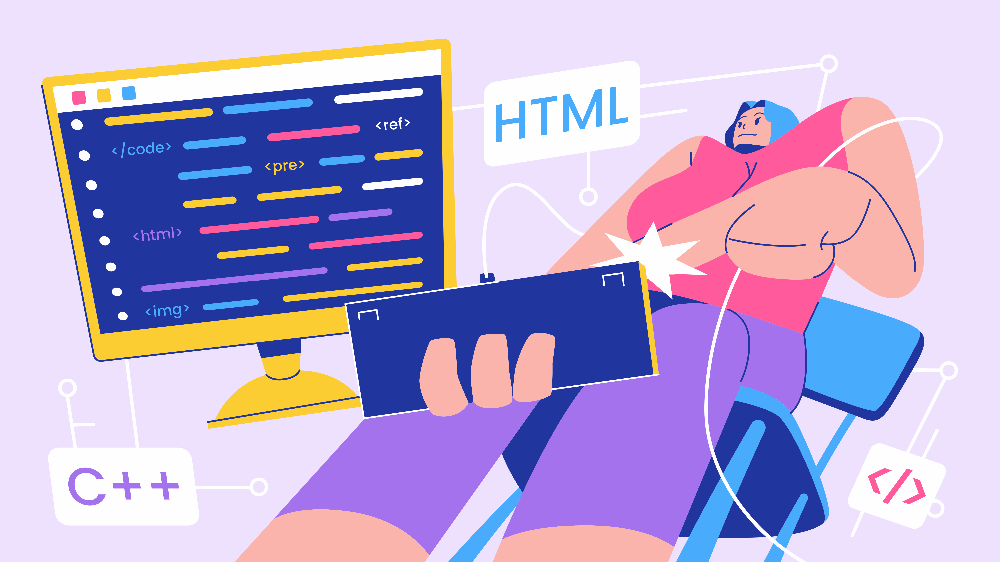
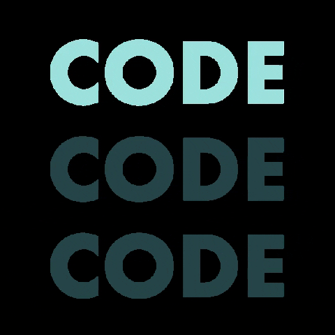

Está confuso sobre como começar a aprender programação? Não se preocupe! Aqui você encontrará guias detalhados e recursos úteis para ajudá-lo a dar os primeiros passos.
ps: Muitos dos recursos listados aqui são originalmente em inglês, caso não tenha familiaridade com o idioma, tente utilizar tradutores online ou recorrer á outras alternativas.
↓
Role para saber mais
A programação nada mais é do que aprender a comunicar ideias e soluções no formato de instruções para um programa e executa-las. A programação está presente em quase tudo que observamos no nosso dia-dia principalmente em nossos dispositivos eletrônicos.
A programação se dá em forma de Linguagens de programação, as quais são conjuntos de regras e sintaxe que permitem que uma pessoa consiga escrever um código que possa ser interpretado por um computador. Existem diversas linguagens de programação para cada proposito, porém todas elas compartilham de uma mesma base, a lógica de programação.
Nesse guia, você encontrará informações sobre a lógica de programação, linguagens de programação e repositórios, além de links para ferramentas que podem te ajudar a aprender e praticar programação.

No nosso mundo atual, o cenário da informática e da programação vem crescendo rapidamente. E com isso surgem várias vertentes e diferentes linguagens as quais as pessoas podem aprender. Nesse contexto, é importante aprender uma lógica comum em todas essas linguagens. A lógica de programação.
A lógica de programação é a base para qualquer linguagem de programação. Ela envolve a capacidade de pensar de forma estruturada e resolver problemas de maneira eficiente. Compreender os conceitos fundamentais da lógica de programação, como variáveis, estruturas de controle, loops e funções, é essencial para se tornar um programador competente.
Para a nossa sorte, existem várias plataformas, jogos e sites que ensinam essa lógica de forma divertida e eficiente. Aqui você pode encontrar alguns deles para poder se aprofundar.

Depois de compreender os conceitos básicos e a lógica por trás da programação, podemos conhecer uma das partes mais importantes desse universo: as linguagens de programação. Elas são utilizadas pelos programadores para escrever instruções que podem ser interpretadas e executadas pelos computadores, permitindo a criação de diferentes tipos de sistemas, aplicações, sites e jogos.
Atualmente, existem diversas linguagens de programação, cada uma desenvolvida com características, regras e finalidades próprias. Entre as mais conhecidas estão Python, JavaScript, Java, C++, C#, Ruby e muitas outras. Apesar das diferenças entre elas, grande parte utiliza conceitos semelhantes, como variáveis, condições, estruturas de repetição e funções. Dessa forma, compreender a lógica de programação facilita o aprendizado de novas linguagens.
Aprender uma linguagem de programação exige prática, dedicação e experimentação. Com o tempo, o programador passa a compreender sua sintaxe e seus recursos, podendo utilizá-los para desenvolver diferentes projetos.


O CodeChef é uma famosa plataforma online indiana focada em programação competitiva, desenvolvimento de software e ensino de algoritmos.
Além das plataformas de aprendizado online, existem muitos canais de vídeo que oferecem conteúdos sobre programação e desenvolvimento de software. Esses canais são excelentes para quem prefere aprender com vídeos explicativos e exemplos práticos.
Dessas plataformas, podemos destacar o Curso em vídeo, uma plataforma e canal no youtube que dispobiliza diversos cursos gratuitos sobre programação, desenvolvimento web, banco de dados e muito mais. É uma ótima opção para quem deseja aprender de forma prática e visual.
A plataforma oferece Aulas, videos, exercicios e materiais de apoio, além disso é completamente gratuita e desenvolvida em português pelo professor Guanabara.
Você pode acessar a plataforma do Curso em vídeo por meio do botão abaixo, ou procurar pelo canal no YouTube.